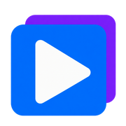

01
Choose your presentation
Classic artwork, a CD jewel case or Cover Flow. Adjustable type, cover size and song spacing keep the composition suited to your album.

YouBeatTurn music folders and mixed playlists into cover-art videos, ready for your own upload to YouTube.
Mac · Windows / Local files, no app account
Classic artwork, a CD jewel case or Cover Flow. Adjustable type, cover size and song spacing keep the composition suited to your album.
Scan supported music folders, choose albums or songs, reorder with drag-and-drop and shuffle. Preview the artwork before rendering.
Render a local MP4 with a thumbnail and chapter-description text. FFmpeg is bundled, with supported hardware H.264 and a software fallback.
Standalone builds. No development tools required.
M-series Macs. macOS 12 or later. Use the DMG installer, or extract the ZIP to try the .app without installing.
64-bit Intel / AMD PCs. Choose the installer or run the portable executable.
These builds are unsigned and not Apple-notarized. macOS Gatekeeper or Windows SmartScreen may show a warning. Check the trusted repository and SHA256 checksums before opening. Releases publish only after native Mac and Windows packaged-app tests pass.
Intel Mac builds are not included in this release. See all release files and notes.
No. Desktop packages include a platform-specific FFmpeg executable and its license notices. Developer builds provision a verified binary during packaging.
The default upload profile is AAC-LC stereo at 384 kb/s and 48 kHz. AAC is lossy. ALAC is available for lossless local exports; resampling mixed source formats can still be necessary. YouTube re-encodes every upload, so final playback quality is controlled by YouTube.
No. YouBeat exports files locally. Upload them yourself using YouTube Studio. No YouTube account or Google Cloud setup is needed in the app.
No. Rendering needs the desktop app to read local files and run FFmpeg. This website provides downloads and information, not a cloud rendering service.